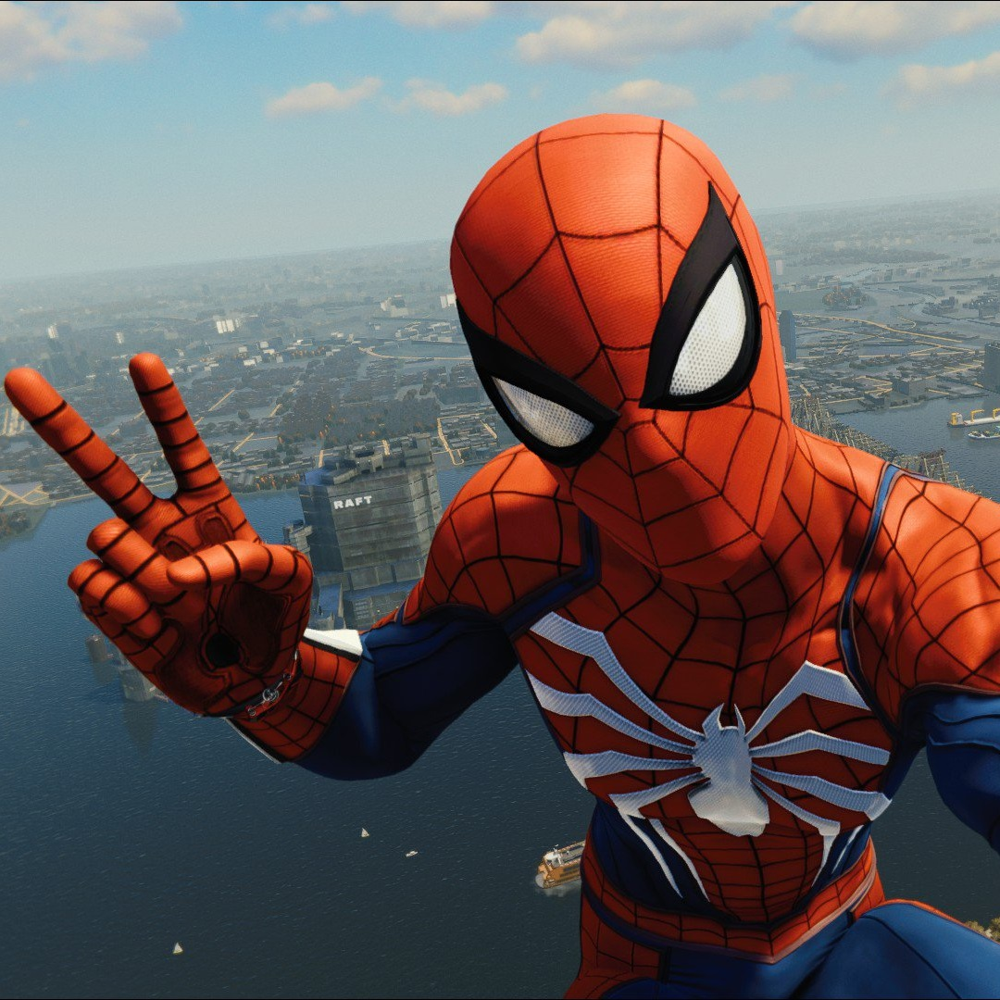
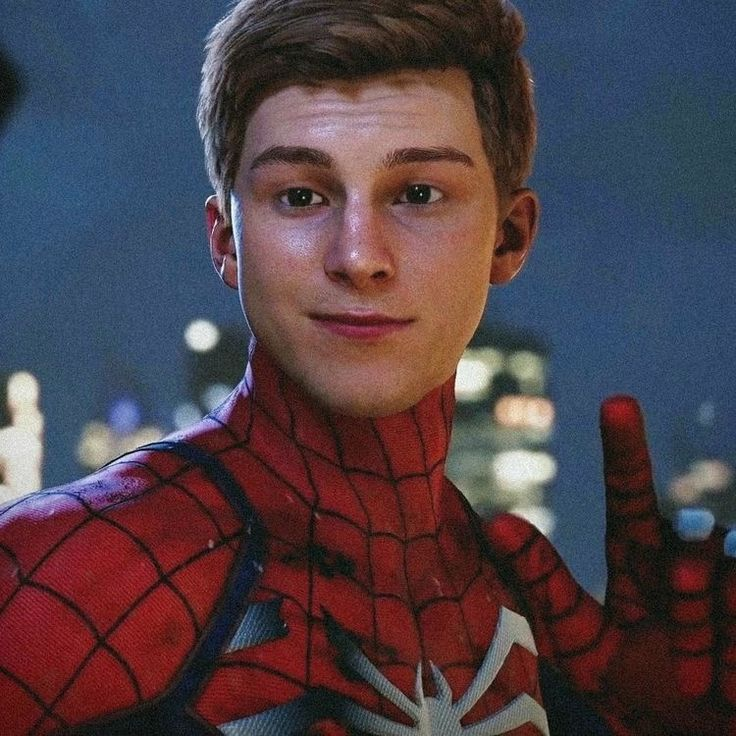
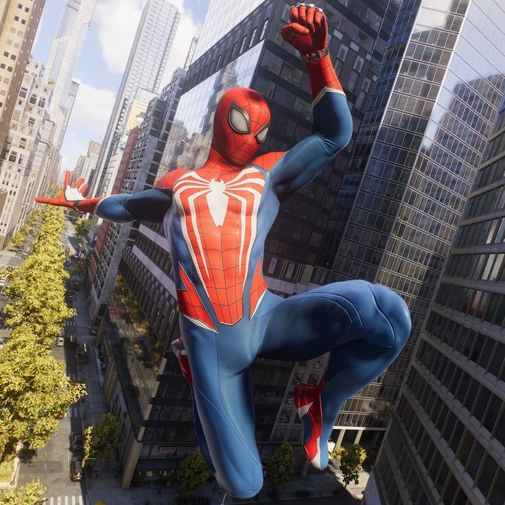

Hello to all of New York City!
As you all know, I’m Spider-Man, but I’m still going to give you a quick recap of my superhero life: Every day, I put on my suit to fight crime in New York City. Danger is everywhere: Kingpin, Kraven, Mysterio, and countless other villains roam the streets day and night! You’re probably wondering: how do I keep going? It’s thanks to my Uncle Ben and that famous phrase he told me before he passed away: “With great power comes great responsibility.” That phrase taught me so much, and I will be forever grateful to him.

Now that you know all this, let’s talk about me: I’m Peter Parker, and I’m currently studying at Midtown Science and Technology High School with my friends Ned Leeds and Mary Jane. As you can see all over this page, I’ve shared a few selfies of myself. Go ahead, you can say it—I’m quite a handsome guy! Anyway, moving on: some of you may have noticed, I’m the Spider-Man from the PlayStation games created by Insomniac Games!

My goal here is to tell you more about the actors who have played Spider-Man in the movies and show you the various posters where they appear! If you want to know more, I invite you to check out the “Movies” and “Gallery” pages! Enjoy your visit, and I’ll see you in the streets of New York City!
